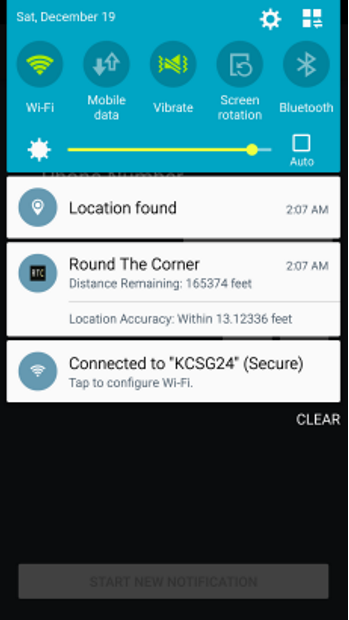

Project Description
Round The Corner is a simple project that served
the purpose of practicing how to use standard
Android library functions like Views, Notifications,
Location Services, Background Services, among others.
The application takes inputs from the user, and begins
to check the distance between the device and the location
that was found using geo-caching. When the distance between
the device and the target location is less than the input distance,
the input message is sent to the input phone number.
There are simple binary load and save options that allow the user
to save the current inputs, and load them later hassle free.